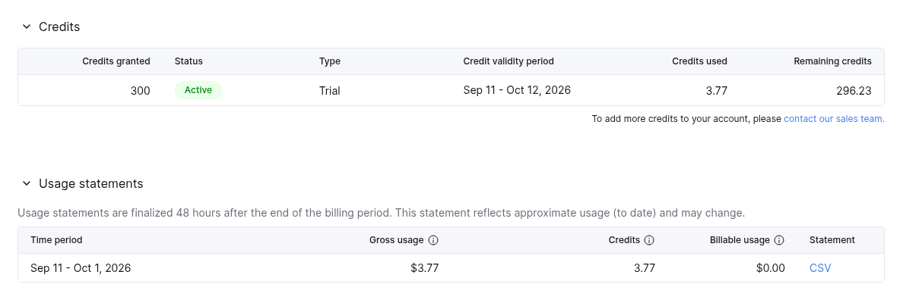
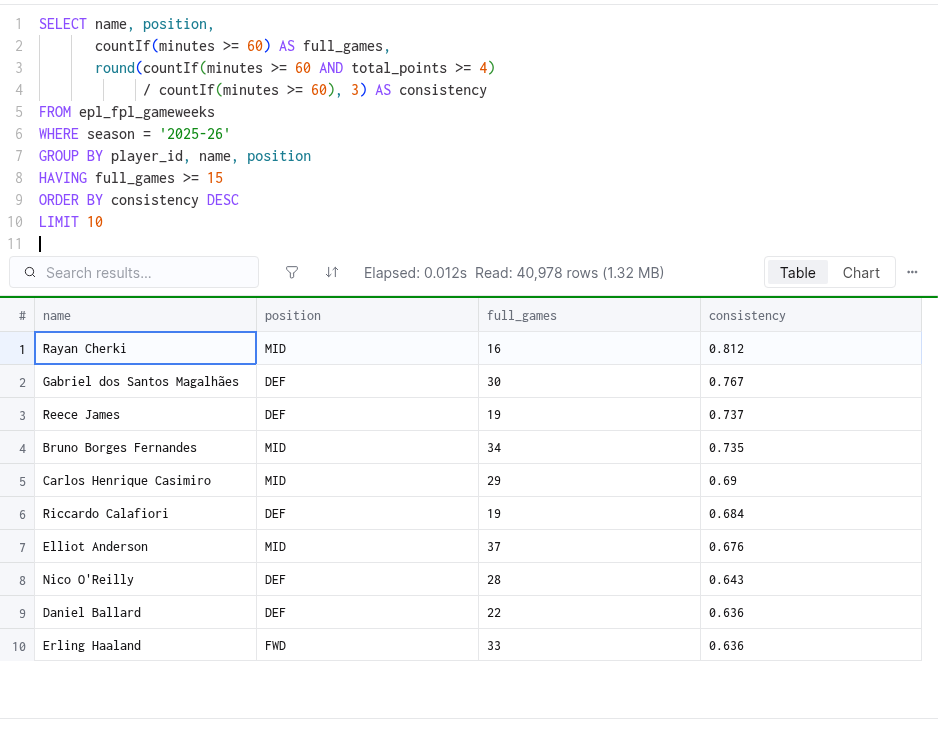
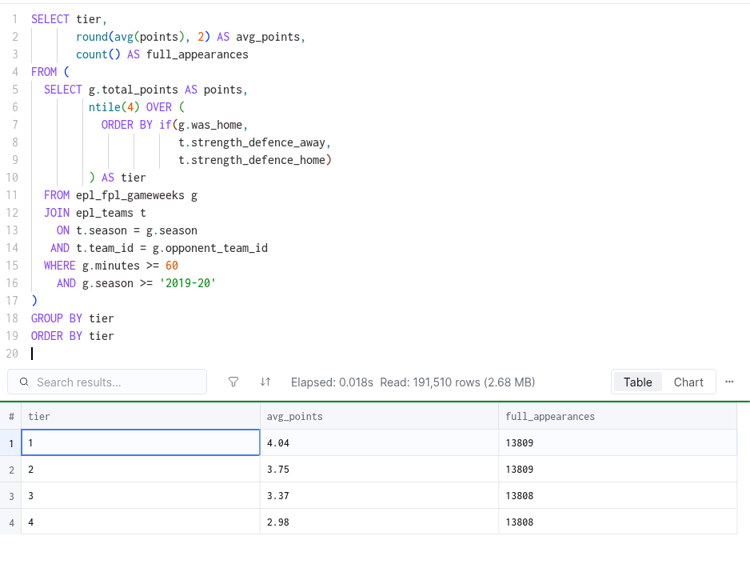

A data & AI operating model, proven on ten seasons
Organisations sit on history and still decide on instinct. This is the alternative, working: a cloud warehouse, a backtested rulebook, and a weekly decision it actually makes.
ZI QIAN HOE · github.com/ziqian83/epl-fpl-analytics
The test bed
Ten completed seasons of English Premier League player data in ClickHouse Cloud. Every number in this deck is a live query against it - and the whole build to this point consumed 1.3% of a $300 trial.

The "platforms are expensive" objection is dead - a full working proof now costs less than a team lunch.
The honest baseline
A correlation on the 0-to-1 scale, where 1.0 means last season perfectly predicts this season and 0 means no relationship at all. Here: last season's points vs this season's, for the 203 players with 900+ minutes in both 2023-24 and 2024-25. (Ranked version: 0.454 - same scale, comparing order rather than exact totals.)
That is what "just repeat last year" is worth. Every candidate signal was measured against this bar before anything shipped. None cleared it alone - so the engine is a composite, and the bar stays published.
Instinct is a baseline, not a strategy - measure it, publish the number, then beat it.
Signal 1 - survives
The screen: share of a player's full games (60+ minutes) returning 4+ points, measured over four seasons. The model's top quintile went on to beat the cohort average 73.5% of the time the following season. The average player manages 46.7%. Dependable separates from streaky.

Revenue quality: dependable contributors beat streaky stars - and the difference is measurable before you commit.
Signal 2 - survives
Every full appearance since 2019-20, sorted into four buckets by the opponent's defensive strength. Average points per appearance fall monotonically from 4.04 against the weakest quartile to 2.98 against the strongest - a 36% swing from the fixture alone, ~13,800 appearances per bucket.

Territory adjustment: judge every performance only after pricing the difficulty of the ground it was earned on.
Signals 3 and 4 - survive, with caveats
For the 43 newcomers with no league history in 2025-26, their opening market price predicts their season output at 0.534 - correlation on the same 0-to-1 scale as the baseline, and as good as the veteran 0.517. Trust the price for attackers fast; discount new defenders until about 900 live minutes.
Of the cheapest performers by points-per-million, 59.2% went on to beat the cohort average - value screening pays at the cheap end, even though it cannot rank the expensive end.
Players whose teams lose more when they play score less next season - correlation -0.19 on the 0-to-1 scale, where the minus sign means more team losses, fewer points. The "he carries a bad side" story is priced wrong.
Price signals, value screens, and unit economics all work - provided you know exactly where each one stops working.
Two signals retired
Correlation between a player's home-minus-away scoring split this season and the same split next season, 173 regulars. On the 0-to-1 scale this is effectively zero persistence. A favourite pub stat, dead in the data.
How well a player's historical minutes-per-season predicts his future output, same scale. Near zero - it does not. Injury and rotation risk are live information, not history; moved to the news layer.
Both retirements are logged with the query that killed them.
Kill weak signals in public - an operating model that cannot say "we were wrong, here is the number" is a marketing deck.
The corporate analogs
| Mechanic in the model | Reads as |
|---|---|
| Consistency screen | Revenue quality |
| Points per million | ROI discipline |
| Team-proof ratio | Alpha vs beta |
| Fixture weighting | Territory-adjusted measurement |
| The 4-point transfer rule | Switching costs |
| Three-per-club cap | Concentration limits |
| Automatic substitutes | Failover design |
| Price changes + 50% sell-on tax | Mark-to-market with churn tax |
| Expiring chips | Use-it-or-lose-it budgets |
Every mechanic in this engine already has a name in your boardroom - the grammar transfers whole.
The exhibit
Unused weekly transfers bank to a cap of five - an option whose carrying cost is the points of the move not made. Ten seasons price the option. The bars: how many of the eventual top-20 performers are identifiable by week N.
Week 4 buys almost nothing over week 3 (6.8 vs 6.5 of 20). By weeks 6-8 the picture has roughly doubled. So the option is worth holding: bank to the cap, reassess at weeks 6-8, spend before the mid-season expiry. The engine outputs the crossover point, not a feeling.
Waiting is a position with a price - bank the option, and spend it only when the odds say so.
Data quality is the moat
The moat is never the data - it is the unglamorous discipline of keys, scopes, and cold starts.
The engine, live
Readout: docs/05_picker_v1.md · Backtest: docs/04_backtest_results.md
A model earns trust only when it runs on a live portfolio - this one did, this week.
The close
"Data strategy is not the warehouse. It is the discipline of pricing every decision - including the decision to wait - and publishing the score when you were wrong."
ClickHouse Cloud · 253,900 records · 10 seasons · $3.77 build cost
github.com/ziqian83/epl-fpl-analytics